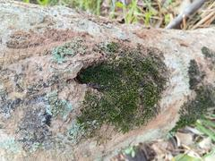
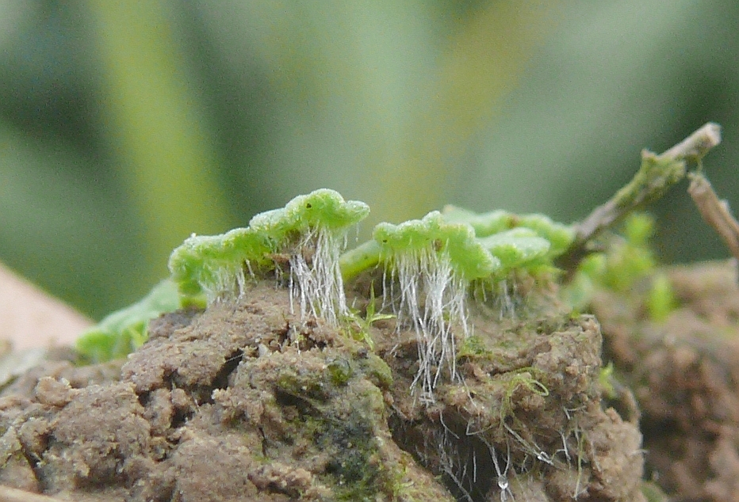
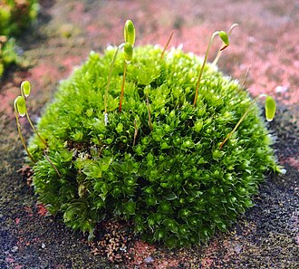
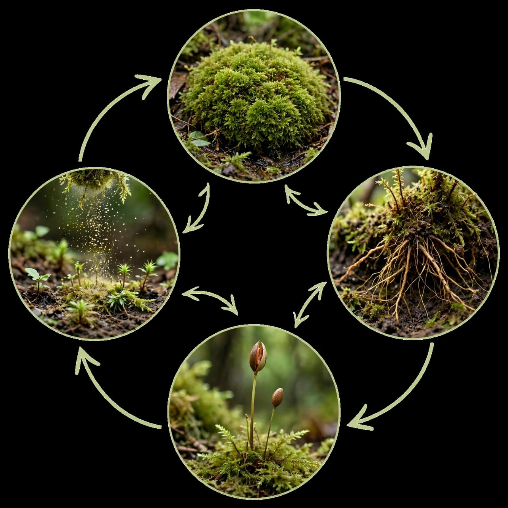

LES MOUSSES : LA SORTIE DE L'EAU
Les mousses (Bryophytes). Premières plantes à coloniser la terre ferme, elles restent petites et dépendantes de l'humidité car elles n'ont pas de vaisseaux conducteurs pour transporter la sève.




Appareil végétatif : pas de vaisseau, donc une petite taille. Une cuticule limite la perte d'eau, les stomates (sur le sporophyte) font les échanges gazeux et les rizhoïdes fixent la plante.
Reproduction : par spores, dispersées par le vent. La fécondation a besoin d'eau (gamètes mâles nageurs). Apparition vers 470 Ma, à l'Ordovicien.